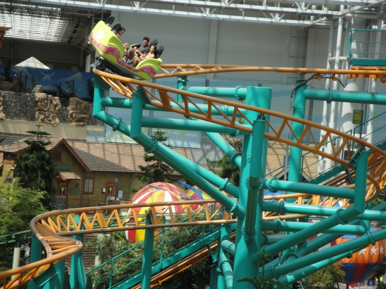
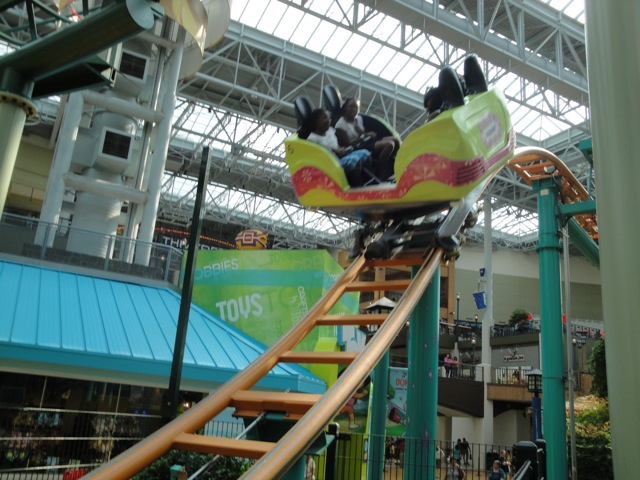
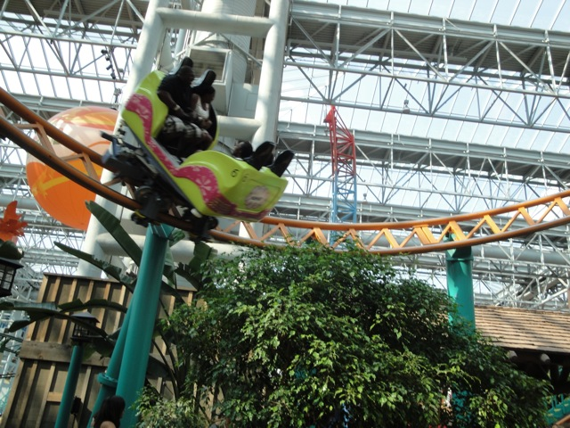
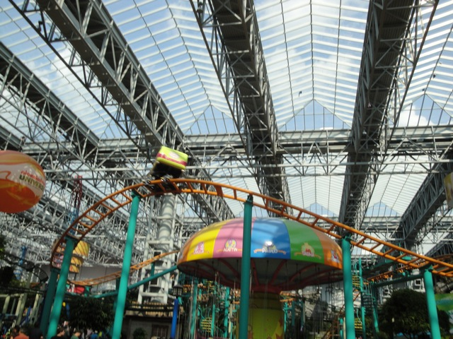
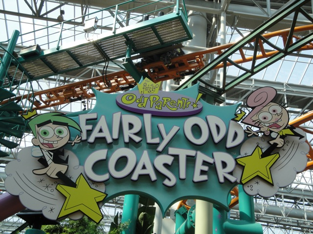

| |
Fairly Odd Coaster Review

We're here at Nickelodeon Universe, where we'll be reviewing Fairly Odd Coaster. Once you get in the seat, you pull down the lap bar, buckle the seat, and wait. Once you dispatch, you climb up the lifthill. If you happen to be sitting backwards, you'll feel funny as you climb up the lifthill. But once you crest the lifthill, it won't matter which way you face. You then start to roll down the twisted first drop. We arn't spinning much yet, but it's still a very fun first drop. Very twisty. You gain quite a bit of speed there. But before you know it, you're rising up into the switchbacks. During the switchbacks, you don't spin too well. I mean, you do spin, but it's not that intense. But luckily, after the switchbacks, you head down a spiral drop that not only picks up our lost speed, but it also really gets the car spinning. So that's more awesome news for us. =) After that, we head into a sort of upward helix, sort of thing. I just know that it spun a lot during this part of the ride. So that is awesome!!! =) We head down another dip before heading around a big turn that engulfs the backwards chair swings (Damn me for not riding them). But right after that, yep. More trim brakes. Aww. That really isn't good for our spinning. But luckily, we still continue to spin slightly. We then head down a small fun drop before rising up into a bunny hop which actually provides some mild airtime. You then spin around as you spiral up through one last helix. However, that is the end as our ride on Fairly Odd Coaster is now over. It's a fairly good spinning coaster and I would totally ride it if you're ever at Nickelodeon Universe as this ride never really gets a long line.
7/10
Location: Nickelodeon Universe
Opened: 2004
Built by: Gerstlauer
Last Ridden: August 5, 2010
I have ridden this exact same ride at the following parks.
Six Flags New England
Worlds of Fun
Fairly Odd Coaster Photos




|